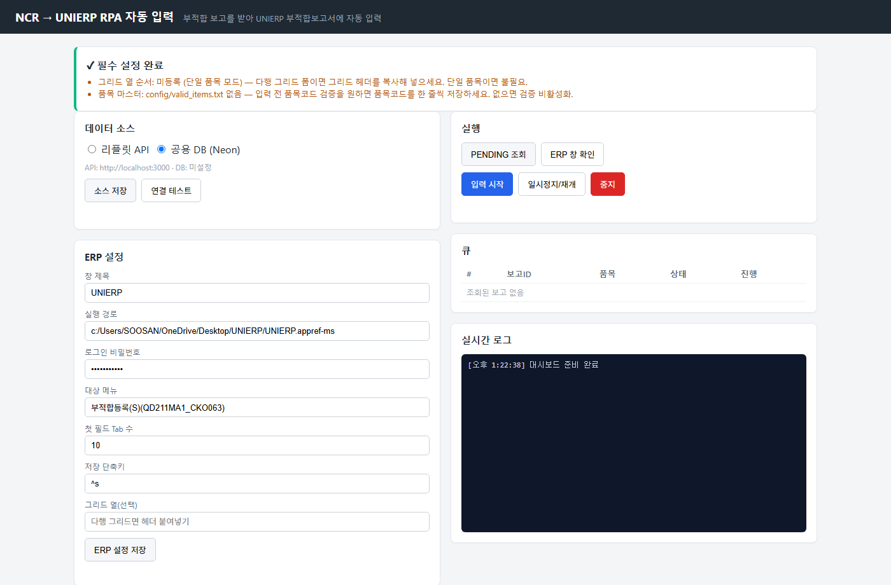
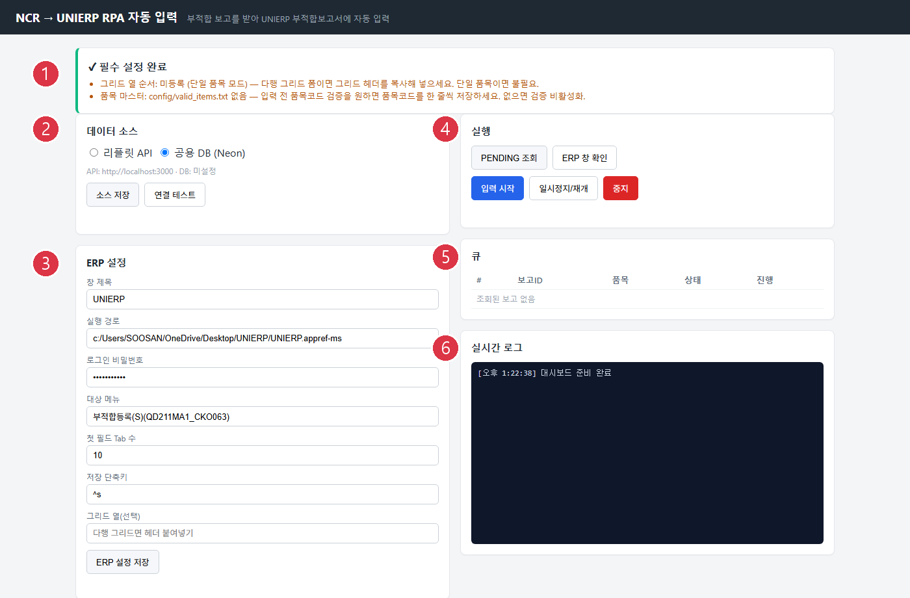
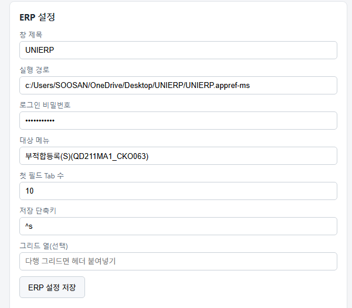
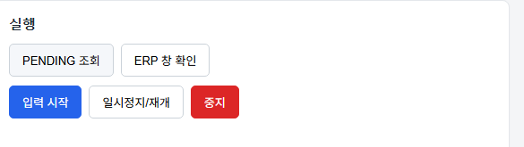
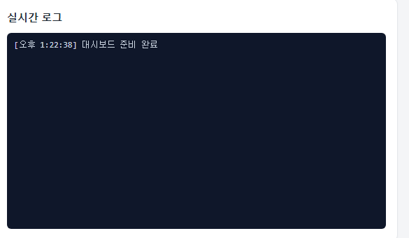

http://127.0.0.1:8010 자동 오픈
[!warn] 콘솔 창을 닫으면 서버 종료. 최소화만 OK. 브라우저만 닫아도 서버는 살아있음.

| # | 섹션 | 역할 |
|---|---|---|
| ① | 설정 점검 배너 | 필수 설정 누락 시 빨간 경고, 정상이면 ✓ |
| ② | 데이터 소스 | 리플릿 API / Neon DB 중 어디서 조회할지 (기본 공용 DB) |
| ③ | ERP 설정 | UNIERP 창 제목·실행경로·로그인PW 등 |
| ④ | 실행 | PENDING 조회 / ERP 창 확인 / 입력·일시정지·중지 |
| ⑤ | 큐 | 처리할 보고 목록과 상태 |
| ⑥ | 실시간 로그 | RPA 진행 라이브 출력 |

| 항목 | 값 |
|---|---|
| 창 제목 | UNIERP - SOOSAN CEBOTICS (고정) |
| 실행 경로 | UNIERP 바로가기 경로 (예: c:/Users/<계정>/OneDrive/Desktop/UNIERP/UNIERP.appref-ms) |
| 로그인 비밀번호 | ERP 비밀번호 (비워두면 본인 로그인) |
| 대상 메뉴 | 부적합등록(S)(QD211MA1_CKO063) (고정) |
| 첫 필드 Tab 수 | 10 |
| 저장 단축키 | ^s (Ctrl+S) |
[!info] 필드 좌표는 [좌표 편집] UI 로 수정 가능 (/api/field-mapping).
저장은 원자적 (임시 파일 → rename) 이라 도중 크래시해도 원본 파일은 안 깨집니다.

| 버튼 | 동작 |
|---|---|
| [PENDING 조회] | DB 에서 PENDING 보고를 조회 |
| [ERP 창 확인] | UNIERP 창 감지. 없으면 자동 실행 시도 |
| [입력 시작] | 큐 보고를 하나씩 UNIERP 폼에 자동 입력 |
| [일시정지/재개] | 다음 키 전 대기. 다시 누르면 재개 |
| [중지] | 즉시 중단. 처리 중이던 보고는 PENDING 복원 |
부적합등록(S) 검색해 폼 한 번 띄워둠
(이미 열려있으면 그대로 사용)
[!info] 이 시점에 T1 자동회수 가 함께 실행됩니다. 이전 세션에서 크래시로 PROCESSING 상태로 갇힌 보고 (5시간 이상)는 자동으로 PENDING 로 복원되어 큐에 포함됩니다.
[!warn] RPA 도는 중 절대 금지: 마우스·키보드 입력, 창 전환, 채팅·메일 확인. 포커스 이탈 감지되면 자동 중지되고 그 보고는 FAILED 마킹.
각 보고 입력·저장 끝나면 자동으로 다음이 일어남:
모든 보고 끝나면 검토 패널 이 열림 → 각 보고 UNIERP 화면과 대조 → [완료 확인] 또는 [모두 확인]
이전 시스템 문제: - UNIERP 저장은 됐는데 사용자 확인 대기 큐가 서버 메모리에만 존재 - 브라우저 닫음 · PC 재부팅 · 콘솔 종료 → 큐 사라짐 - 다시 조회하면 DB 는 PROCESSING 로 남아 → UNIERP 이중입력 위험
브라우저에서 대시보드 첫 화면 진입 시: - 이전 세션의 REVIEW 보고가 있으면 자동으로 검토 패널이 뜸 - 각 보고에 [복원됨] 배지 표시 (아이콘 앞) - 확인 흐름은 신규 REVIEW 와 동일 → [완료 확인]
RPA_STALE_PROCESSING_MINUTES)sync_last_error 컬럼에 [auto-recovered] PROCESSING > 300분 경과... 기록sync_attempt_count 증가[reports/pending] stale PROCESSING 자동 복원: 3건 → PENDING 같은 메시지 확인증상: RPA 가 UNIERP 폼의 잘못된 위치에 클릭·타이핑
원인: PC 해상도·모니터 배치가 캘리브 기준(1920×1080)과 다름
대응:
1. 대시보드에서 [필드 좌표 편집] UI 진입
2. 각 필드의 ref_x, ref_y 를 UNIERP 화면 실제 좌표로 조정
3. [저장] → field_mapping.json 원자적 업데이트 (실패해도 원본 안 깨짐)
[!info] 좌표는 0~20000 범위여야 함. 그 외 값 입력하면 422 오류 반환. UI 가 안내함.
| 증상 | 원인 · 대응 |
|---|---|
| "UNIERP 창을 찾을 수 없습니다" | 창 켜져 있는지 확인. 최소화도 안 됨. [ERP 창 확인] 재클릭 |
| 로그인 창에서 멈춤 | ③번 섹션에 비밀번호 확인. 저장 후 재시도 |
| 필드 잘못된 위치 클릭 | 캘리브레이션 (7절) |
| 팝업 뜨고 진행 안 됨 | RPA 가 팝업 감지 → 자동 일시정지. UNIERP 확인 후 [재개] |
| REVIEW 보고가 계속 남음 | 검토 패널에서 [완료 확인] 눌러야 COMPLETED |
| 관리자 권한 부족 오류 | 시작.bat 을 우클릭 → "관리자 권한으로 실행" |
| 콘솔 창에 한글 깨짐 | PYTHONIOENCODING=utf-8 이 시작.bat 에 이미 반영됨. Windows 코드페이지 확인 |
| 여러 보고가 FAILED 로 마킹 | UNIERP 상태·좌표 문제. logs/*.log 최신 확인 |
rpa-ncr/logs/
├── rpa_ncr_YYYY-MM-DD.log ← 오늘 실행 로그
├── rpa_ncr_YYYY-MM-DD.log.1 ← 어제 (roll)
├── ...
문제 발생 시 최신 파일 확인. 5개까지 자동 회전.
PENDING 조회 결과 0건)Q. 도중에 UNIERP 를 다른 사람이 클릭하면? A. 포커스 워치독 감지 → 자동 중지. 그 보고는 FAILED. 다른 사람이 사용 안 하는 시간에 실행 권장.
Q. 검토 패널 없이 즉시 COMPLETED 로 하고 싶다. A. 현재 지원 안 함. UNIERP 실 저장 검증 위해 검토 필수.
Q. 필드 좌표 바꿨는데 새 좌표가 안 반영됨. A. 저장 후 페이지 새로고침. 그래도 안 되면 rpa-ncr 재시작.
Q. 여러 PC 에서 동시에 실행 가능? A. 안 됨. 같은 DB 를 여러 워커가 조회하면 이중입력 위험.
Q. 밤새 자동으로 돌리고 싶다. A. 현재 지원 안 함. UNIERP 세션이 밤새 유지 안 되고, 검토도 사람이 확인해야 함.